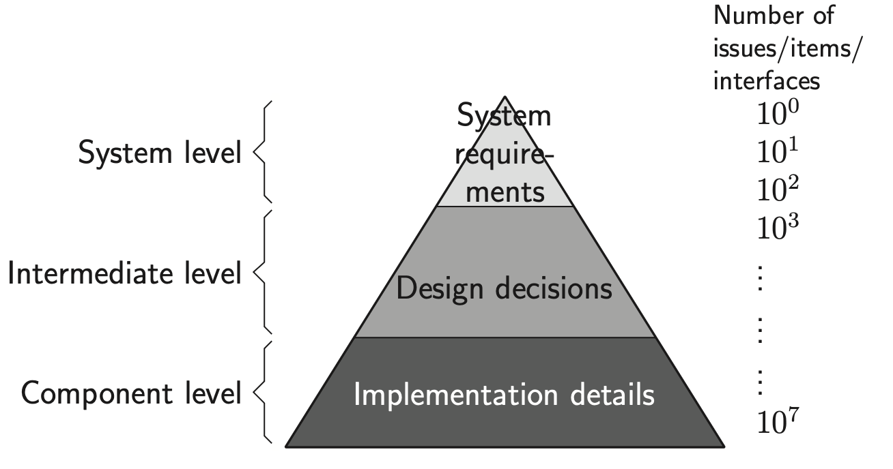
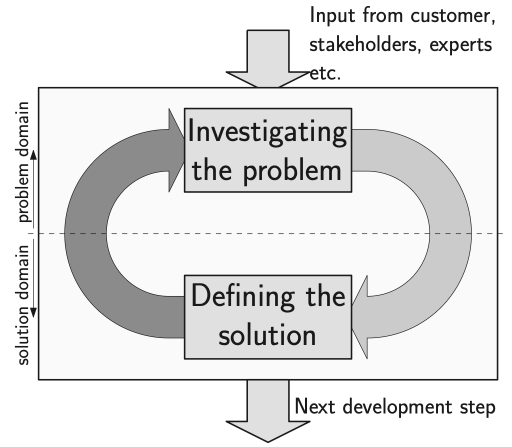
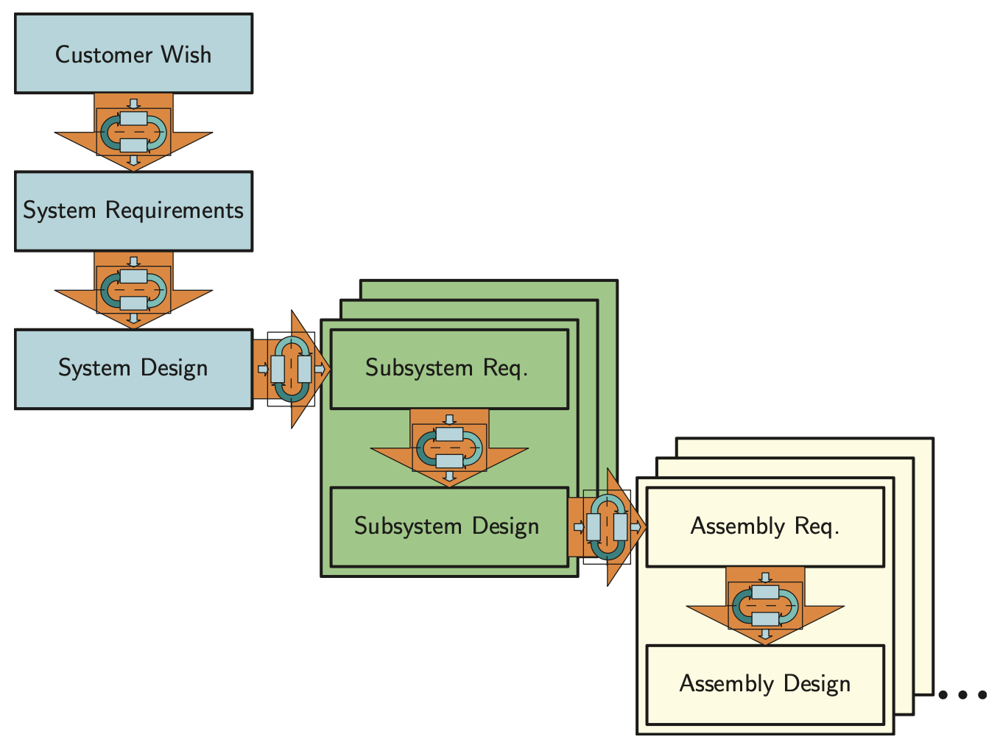
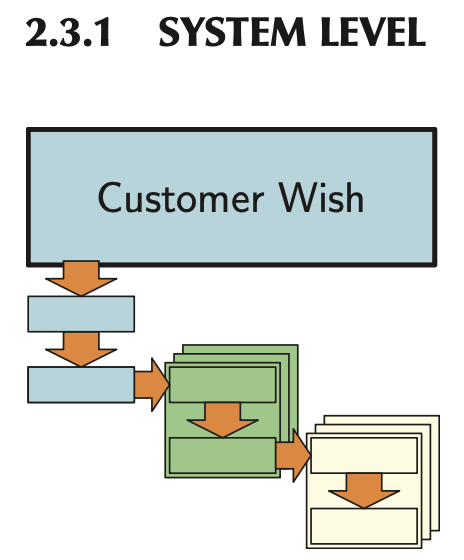
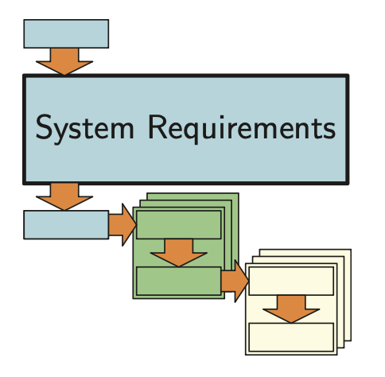
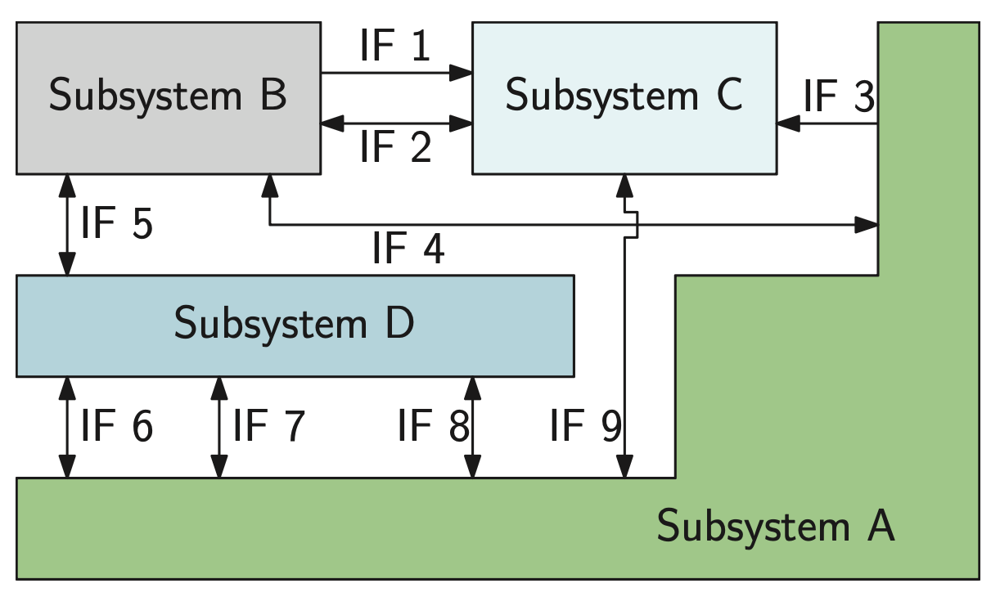
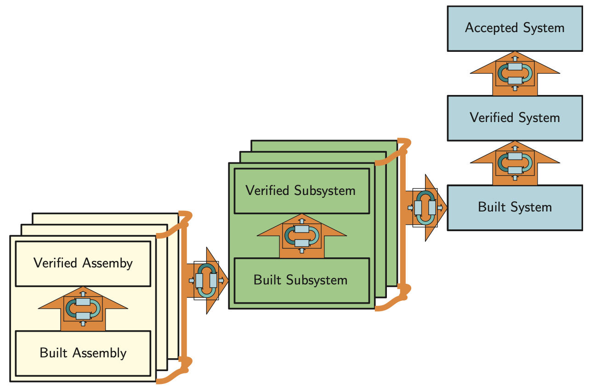
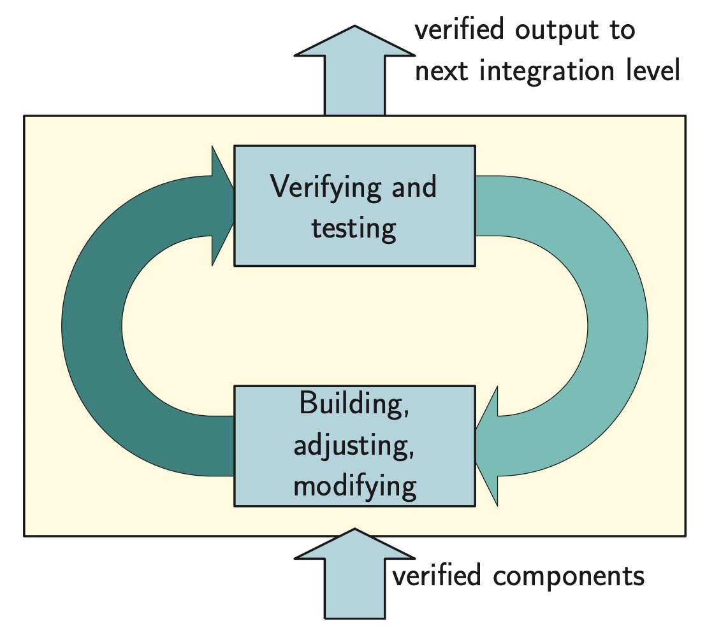
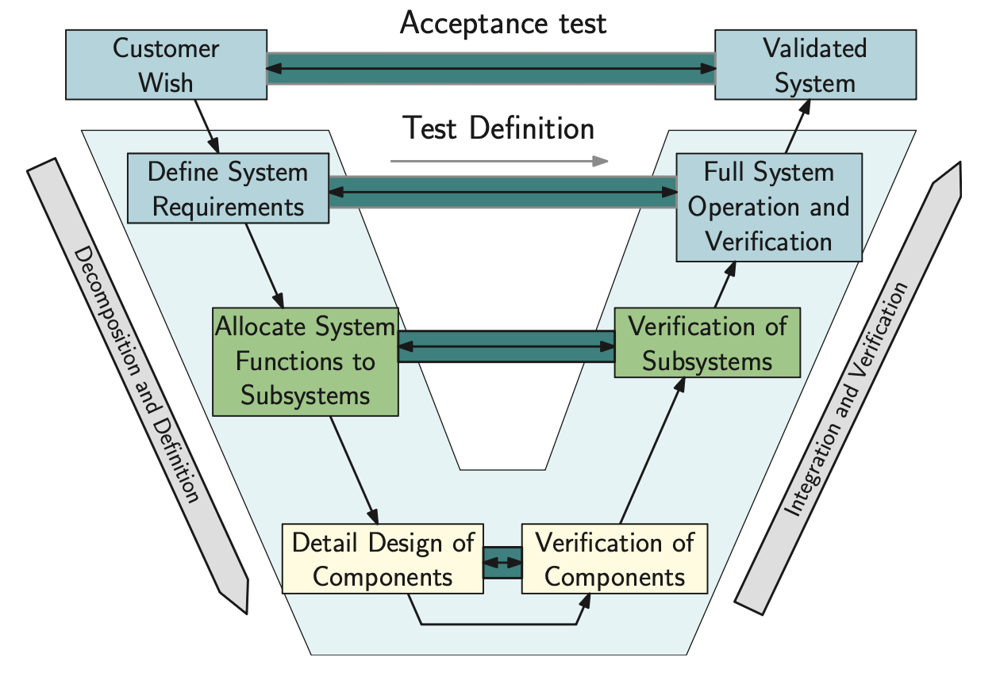

This is from the second chapter of the SDE book mentioned in Systems Engineering.
The Muller Pyramid shows how for a complex system (like an ASML wafer scanner), the number of issues explodes from the analysis of initial customer need to development of engineering details.

The top-level systems engineering process as a loop of exploring the issue and defining a solution. The right (downward) arrow is actually designing the solution. The left (upward) arrow depicts the verification: does the solution resolve the issue sufficiently and without too many negative effects?

It does mean that when the level of detail increases, the number of parallel processes increases. In a design process this is often seen as group of parallel sub-projects in which each of the sub-projects develops a subsystem. This is visualized below. This figure shows how systems engineering repeats the same development process, shown in the Figure above on different levels:
-
System Level Customer Wish →Requirements →Design
-
Sub-system Level Requirements →Design
-
Assembly Level (depending on the field of application, this can be called, e.g., the module level) Requirements →Design
-
Component Level Requirements →Design
-
Activities

Customer Wish
The process starts with a customer wish that may not be clearly defined. Sometimes there is a market opportunity, or a gap in the product portfolio of a company. Sometimes a customer has an idea that must be elaborated before the full development process can start

In such cases, the marketing department of the development company expresses the customer wish. It is wise to discern between the customer of the development company, and the end user(s).The system designer has to take interests of both parties into account and balance them.
System Requirements
In engineering projects, the customer wish is often expressed in the form of an initial or preliminary design or in the form of system requirements.

The task of the systems engineer, system designer, system architect, lead designer, or other title in the organization is to investigate the customer’s wish further, and to translate that wish into a system requirement specification (often simply called system requirements, or system specifications). This involves trade-offs between what the technology can offer and what risks are involved. What the end-user wants, what he wants to pay, what the customer is willing to invest, and what the supplier can deliver, so that:
On one hand, the customer:
- gets a product in time,
- for a reasonable price,
- with a reasonable chance of success in the market.
On the other hand, the supplier:
- can build the product,
- with sufficient margin,
- with acceptable risks in the development process.
The end users will ensure success in the market if the product has a desirable combination of features (or functionality) for a competitive price. Thus, the end user’s interests should be largely in line with those of the customer, if dealt with properly.
Customer Wish and System Requirements correspond to the system level in the pyramid
System Design
corresponds with the intermediate level in the pyramid. As one can see, the number of issues increases significantly to a number that can not be overseen easily. Also, the number of disciplines and the depth of the knowledge required from those disciplines is increasing as very diverse knowledge is required:
- What is technically feasible in the time frame before product launch?
- What is producible (e.g., can we find the right production equipment)?
- What can our development team handle (e.g., can we hire enough qualified developers)?
- What will the impact on our corporate image be?
- Will the designed system actually address the identified issue?
A subsystem is defined as a system that is largely independent from the other subsystems, and it performs a set of functions as described in the system design. An interface is a point of interaction between functions or components.
All cooperation between the subsystems has to be made explicit by the interfaces. Investigating the interfaces is the core business of a system designer.

There are two kind of systems engineers: those who look at the interfaces and amateurs.
ok buddy go touch grass
While a designer is mainly interested in delivering his component or subsystem, the system designer should be focused on the things that bind these components and subsystems together: the interfaces. Therefore, the system design document specifies the performance of the subsystems, and describes the interfaces. Depending on the type of the interfaces, this can be done for instance, using CAD drawings (to ensure proper mechanical fit), signal definitions, and software class diagrams. But also conformity to standards and testing procedures should be specified as these define interfaces with the rest of the world. The main concept choices and the design of long-lead items are also covered by the system design.
Subsystem Level
Moving to the second columns marks a change in the development project. Up to here, it was a systems-only project, involving a relatively small team. Now, in most cases, upon starting the definition of the subsystem’s requirements will require assignment of the project teams for developing these subsystems. The lead designer of such a team studies and interprets the system design for his subsystem and distills the requirements for his subsystem from it.

This results in a set of subsystem requirements in much the same way as the system requirement is an interpretation of the customer wish. As there must be agreement between the customer and the supplier about the system requirement, there has to be agreement about the subsystem requirement between the systems engineer and the subsystem lead designer (and a few more people). The subsystem level will require more information about implementation, for example, what hardware and software will be used.
From this point, the process requires less system design engineering and less multidisciplinary engineering. A complex project may require six or even more levels. As the process is defined generically, at some point the system engineer can stop leading the development process and start monitoring it using hierarchical thinking and the nine-window diagram.
Integration
So far, this suggests that developing is done by “divide and conquer”. By splitting the initial problem into smaller, more manageable chunks and having the systems engineers watching the interfaces, the result will be a well functioning system. This is not necessarily so: when the assemblies become available, they have to be put together to become subsystems. The subsystems then have to be put together to finally form the requested system. Putting it all together and turning the power switch on will almost certainly not work the first time.

The integration step ensures that the individual components/assemblies/subsystems are in agreement with their requirements. Thus prior to proceeding to the next step in the integration process, verification (by means of testing, simulation, etc.) of the individual components/assemblies/subsystems has to be done. The outcome of the verification can be
- success,
- failure,
- minor deviation that needs fixing, but is no barrier for further integration.
However, in practice many issues occur during the verification and further integration processes. Therefore, significant of time has to be reserved for integration and verification! According to Muller, different types of problems are encountered, when integrating a system or subsystem. The typical order is:
- The (sub)system does not build/cannot be made/does not fit.
- The (sub)system does not function.
- Interface errors.
- The (sub)system is too slow.
- The (sub)system does not meet main performance parameter(s).
- Reliability is not met.
Issues 1-2 are on the lower level in the Figure above and 4-6 are on the upper level. The interface errors ( issues 3 ) refer to both levels, and even link them.
The way to organize the integration process is to start working with hardware/software set-ups as soon as possible. Even when the set-ups contain mock-ups and simulated components, learning and knowledge creation are very important, and will result in saved time later in the process when the real material is on site. Present-day approaches with hardware, or software in the loop are aimed at reducing the integration process by taking them into account from the earliest development steps.
Verification and Validation
A very important aspect of the system engineering process is to verify a proposed solution before proceeding with further development. There are several verification methods applicable:
- Reviews
- Experiments, for instance by creating functional models
- Comparison to existing products
- Analyses and/or simulations
We use the term validation for a specific form of verification, namely verification against the customer needs and wishes, and investigating in what way the system can generate value. In other words, the S.U.D. has to create value for the customer. In systems engineering literature, and legal literature, the goal is to deliver the system that was requested and agreed upon.
Thorough understanding of the customer processes and business model is therefore essential for the systems engineer. Without it, trade-offs made by the systems engineer are likely to result in sub-optimal solutions for the customer.
The VEE Model
It tries to integrate the development and integration work.

These testing and verification procedures have to be compiled in conjunction with defining the requirements, not when the development process is already well underway. Also, the requirements should be testable. If a requirement cannot be verified by a testing, measurement or other evaluation method, its value as a requirement should be seriously questioned.